Understand posterior estimates
Source:vignettes/articles/understand-posterior.Rmd
understand-posterior.RmdSummary of contents
In this vignette we document the output of
compute_posterior when the statistical model underpinning
it is well specified and misspecified. Specifically, we document the
output of compute_posterior when the model is well
specified but
- data are missing,
- data are uninformative,
- data are limited to only one episode,
- data are incomparable across episodes,
- data are limited to only one marker.
When the model is well specified and there are data on many markers, we show how the maximum probability of recrudescence / reinfection depends on
- per-episode genotype counts (i.e., multiplicities of infections, MOIs),
- episode count,
- the position of a recurrence in a sequence of episodes,
and thus comment on how the above dependencies impact the
- interpretation of uncertainty.
Finally, we summarise results on the output of
compute_posterior when the model is misspecified because
of
- meiotic siblings,
- half siblings,
- parent child-like siblings,
- genotyping errors and de novo mutations [To-do].
For the more detailed result, see [development files of the Pv3Rs source package] (https://github.com/aimeertaylor/Pv3Rs/tree/main/DevFiles/RelationshipStudy). We have not characterised model misspecification due to inbred parasites. Allele frequency estimates encode population-level relatedness locus-by-locus (Mehra et al. 2025). Allele frequency estimates are plugged into the statistical model underpinning Pv3Rs. Providing they are computed from a sample drawn from the parasite population from which trial participants also draw, there is no need to compensate further for elevated relatedness locus-by-locus on the population level. However, inter-locus dependence (linkage disequilibrium) is liable to generate overconfident posterior probabilities. Population structure (e.g., household effects) could lead to the misclassification of reinfection as relapse / recrudescence. In our view, recurrence classification in the presence of population structure is best understood using complementary population genetic and sensitivity analyses.
Missing data
When data are entirely missing, compute_posterior
returns the prior.
fs = list(m1 = c("A" = 0.5, "B" = 0.5)) # Allele frequencies
y = list(enrol = list(m1 = NA), recur = list(m1 = NA)) # Missing data
suppressMessages(compute_posterior(y, fs))$marg # Posterior
#> C L I
#> recur 0.3333333 0.3333333 0.3333333When data are missing but the user provides MOIs that are
incompatible with recrudescence, compute_posterior returns
the prior re-weighted to the exclusion of recrudescence.
suppressMessages(compute_posterior(y, fs, MOIs = c(1,2)))$marg
#> C L I
#> recur 0 0.5 0.5Uniformative data
When data are entirely uninformative because there is no genetic
diversity, compute_posterior returns the prior.
fs = list(m1 = c("A" = 1)) # Unit allele frequency: no genetic diversity
y = list(list(m1 = "A"), recur = list(m1 = "A")) # Data: not missing
suppressMessages(compute_posterior(y, fs))$marg # Posterior
#> C L I
#> recur 0.3333333 0.3333333 0.3333333Data on only one episode
Homoallelic data without user-specified MOIs: prior return
When only one episode has homoallelic data and the user does not
specify an MOI > 1, compute_posterior returns the
prior.
fs = list(m1 = c("A" = 0.5, "B" = 0.5)) # Allele frequencies
y <- list(enrol = list(m1 = NA), recur1 = list(m1 = "A")) # No enrolment data
suppressMessages(compute_posterior(y, fs))$marg # Posterior
#> C L I
#> recur1 0.3333333 0.3333333 0.3333333Heteroallelic data: prior proximity
When only one episode has heteroallelic data, the MOI under the model necessarily exceeds one because the model assumes no false positivity. The posterior is close to the prior but not equal to it because the data are slightly informative: for relationship graphs with intra-episode siblings, heteroallelic data limit summation over identity-by-descent partitions to partitions with at least two cells for the episode with data. The lower bound on the cell count increases with the number of distinct alleles observed.
# Allele frequencies
fs = list(m1 = c('A' = 0.25, 'B' = 0.25, 'C' = 0.25, 'D' = 0.25))
# MOI at enrolment increases with number of observed alleles:
yMOI2 <- list(enrol = list(m1 = c('A','B')), recur = list(m1 = NA))
yMOI3 <- list(enrol = list(m1 = c('A','B','C')), recur = list(m1 = NA))
yMOI4 <- list(enrol = list(m1 = c('A','B','C','D')), recur = list(m1 = NA))
ys <- list(yMOI2, yMOI3, yMOI4)
do.call(rbind, lapply(ys, function(y) {
suppressMessages(compute_posterior(y, fs))$marg
}))
#> C L I
#> recur 0.3292683 0.3414634 0.3292683
#> recur 0.3260870 0.3478261 0.3260870
#> recur 0.3248359 0.3503282 0.3248359
# MOI increases with external input:
MOIs <- list(c(2,1), c(2,2), c(3,2)) # user-specified MOIs
y <- list(enrol = list(m1 = c('A','B')), recur = list(m1 = NA)) # Data
do.call(rbind, lapply(MOIs, function(x) {
suppressMessages(compute_posterior(y, fs, MOIs = x))$marg
}))
#> C L I
#> recur 0.3292683 0.3414634 0.3292683
#> recur 0.3250000 0.3500000 0.3250000
#> recur 0.3334508 0.3330983 0.3334508Rare homoallelic data with user-specified MOIs exceeding 1: prior departure
If the data are homoallelic, but the user specifies MOIs greater than one, and the observed allele is rare, the posterior departs from the prior because rare intra-episode allelic repeats are more probable given relationship graphs with intra-episode relatedness.
y <- list(enrol = list(m1 = 'A'), recur = list(m1 = NA)) # Homoallelic data
MOIs <- list(c(2,1), c(3,2), c(5,1)) # Different MOIs with first MOI > 1
fs = list(m1 = c("A" = 0.01, "B" = 0.99)) # Rare observed allele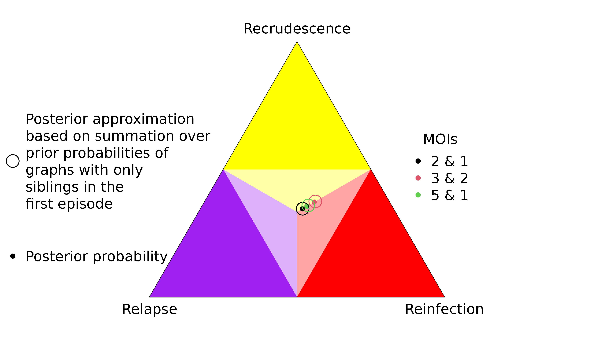
The per-graph likelihood is only appreciable for relationship graphs where all distinct parasite genotypes in the first episode are siblings

Data are incomparable across episodes
When there are data on multiple episodes but no comparable data
across episodes, compute_posterior behaves similarly to
when data are limited to one episode:
- it returns the prior when data are homoallelic without user-specified MOIs > 1,
- its output remains close to the prior when data are heteroallelic,
- its output departs from the prior when data are homoallelic and rare with user-specified MOIs > 1.
# Allele frequencies
fs = list(m1 = c("A" = 0.01, "B" = 0.99),
m2 = c("A" = 0.01, "B" = 0.99))
# Data with an incomparable homoallelic call
y_hom <- list(enrol = list(m1 = "A", m2 = NA),
recur = list(m1 = NA, m2 = "A"))
# Data with an incomparable heteroallelic call
y_het <- list(enrol = list(m1 = c("A", "B"), m2 = NA),
recur = list(m1 = NA, m2 = c("A", "B")))
suppressMessages(compute_posterior(y_hom, fs))$marg # Prior return
#> C L I
#> recur 0.3333333 0.3333333 0.3333333
suppressMessages(compute_posterior(y_het, fs))$marg # Prior proximity
#> C L I
#> recur 0.3370787 0.3595506 0.3033708
suppressMessages(compute_posterior(y_hom, fs, MOIs = c(2,2)))$marg # Prior departure
#> C L I
#> recur 0.5142862 0.2183909 0.267323Data on only one marker
When data on a single marker are comparable across episodes, the
output of compute_posterior depends on the observation type
and the frequencies of the observed alleles. For example,
- A rare match is informative: it quashes the posterior probability of reinfection.
- A partial rare match is also informative, quashing the posterior probability of reinfection.
- A match with a common allele is not very informative: all states are possible a posteriori.
- A partial match with a common allele is not very informative: all states are possible a posteriori.
- A mismatch is informative: it quashes the posterior probability of recrudescence.
The latter demonstrates the sensitivity of recrudescence inference to the assumption under the model that there are no genotyping errors: if a genotyping error generates a single mismatch, the posterior probability of recrudescence is quashed.
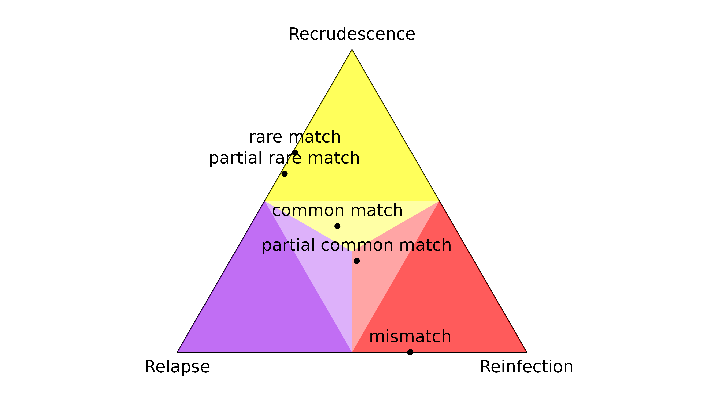
Data on only two markers
When data on a second marker are added and the second observation is consistent with the first the strength of inference generally increases (see arrows in or entering regions of posterior probability greater than 0.5); an exception being the addition of a common match to a common partial match, which is not very informative (central arrow). When a mismatch is added to a rare match (diamond), relapse becomes the most probable state. This demonstrates the requirement of multiple markers for relapse inference.
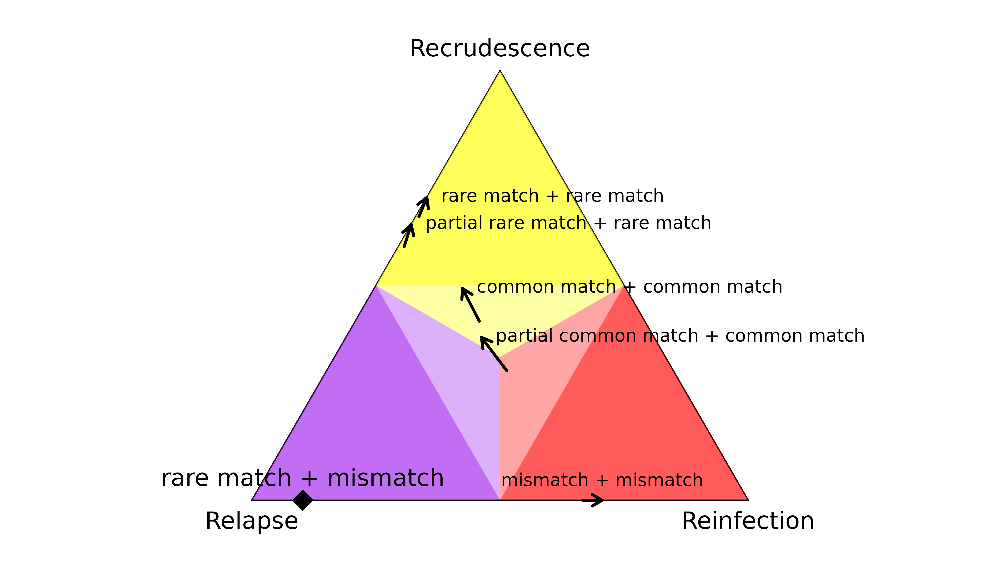
Data on many markers
Given non-zero prior probabilities, as the data increase with the number of markers genotyped, posterior probabilities for a given recurrence converge to either
relapse with posterior probability one when the data suggest the episode of interest is linked to previous episodes by regular sibling relationships
recrudescence with posterior probability less than one when the data suggest the episode of interest is linked to the previous episode by clonal relationships
reinfection with posterior probability less than one when the data suggest the episode or interest is not linked to previous episodes by regular sibling or clonal relationships
Recrudescence / reinfection probabilities necessarily converge to uncertain values because genetic data compatible with recrudescence / reinfection are also compatible with relapse.
Posterior bounds
Because we assume a priori that relationship graphs compatible with a given recurrent state sequence are uniformly distributed, and because relationship graphs compatible with sequences of recrudescence / reinfection are a subset of those compatible with sequences of relapse, bounds induced by the prior on non-marginal posterior probabilities can be computed a priori as a function of the prior on the recurrent state sequences and the prior on the relationship graphs; see vignette(topic = “graph-prior”, package = “Pv3Rs”).
Because the probability mass function of a uniformly distributed discrete random variable depends on the size of its support, the prior on uniformly distributed graphs (and thus bounds on the posterior induced by the prior) depends on the size of the graph space. Graph space size depends on constitute graph size (all graphs within a space are the same size). Graphs have as many vertices as parasite genotypes within and across episodes. As such, graph size depends on episode counts and per-episode MOIs, which vary across trial participants.
Using rare matched and mismatched data on 100 markers, we demonstrate the dependency on per-episode MOIs of prior-induced posterior bounds for a single recurrence. We also demonstrate how maximum marginal probabilities of recrudescence / relapse depend on episode counts by adding recurrences with no recurrent data. However, these maxima are based on knowledge that there are no recurrent data on all but the first recurrence. In other words, they are not computable a priori.
marker_count <- 100 # Number of markers
ms <- paste0("m", 1:marker_count) # Marker names
all_As <- sapply(ms, function(t) "A", simplify = F) # As for all markers
all_Bs <- sapply(ms, function(t) "B", simplify = F) # Bs for all markers
no_data <- sapply(ms, function(t) NA, simplify = F) # NAs for all markers
fs <- sapply(ms, function(m) c("A" = 0.01, "B" = 0.99), simplify = FALSE)Increasing per-episode MOIs
MOIs <- list(c(1,1), c(2,1), c(2,2))
y_match <- list(enrol = all_As, recur = all_As)
y_mismatch <- list(enrol = all_As, recur = all_Bs)
The posterior probabilities of recrudescence increase with increasing graph size when the MOIs are balanced. The posterior probabilities of reinfection increase with increasing graph size.
Digression: counts of intra-episode siblings
To increase per-episode MOIs, we can do as above and increase user-specified MOIs without changing the data, or we can increase the allelic diversity of the data, s.t. MOIs modelled under Pv3Rs increase without user-specified MOIs. Either way, we get the same maximum probabilities:
all_ACs <- sapply(ms, function(t) c("A", "C"), simplify = F) # A&C for all
all_BEs <- sapply(ms, function(t) c("B", "E"), simplify = F) # A&C for all
all_ACDs <- sapply(ms, function(t) c("A", "C", "D"), simplify = F) # A&C for all
fs <- sapply(ms, function(m) c("A" = 0.01, "B" = 0.01, "C" = 0.01,
"D" = 0.01, "E" = 0.96), simplify = FALSE)
hom_match_data <- list(enrol = all_As, hom_match_data = all_As)
het_match_data <- list(enrol = all_ACDs, het_match_data = all_ACs)
hom_mismatch_data <- list(enrol = all_As, hom_mismatch_data = all_Bs)
het_mismatch_data <- list(enrol = all_ACDs, het_mismatch_data = all_BEs)
rbind(suppressMessages(compute_posterior(hom_match_data, fs, MOIs = c(3,2))$marg),
suppressMessages(compute_posterior(het_match_data, fs)$marg),
suppressMessages(compute_posterior(hom_mismatch_data, fs, MOIs = c(3,2))$marg),
suppressMessages(compute_posterior(het_mismatch_data, fs)$marg))
#> C L I
#> hom_match_data 0.8514851 0.14851485 9.084162e-231
#> het_match_data 0.8514851 0.14851485 0.000000e+00
#> hom_mismatch_data 0.0000000 0.05494505 9.450549e-01
#> het_mismatch_data 0.0000000 0.05494505 9.450549e-01But the graph likelihoods change:
 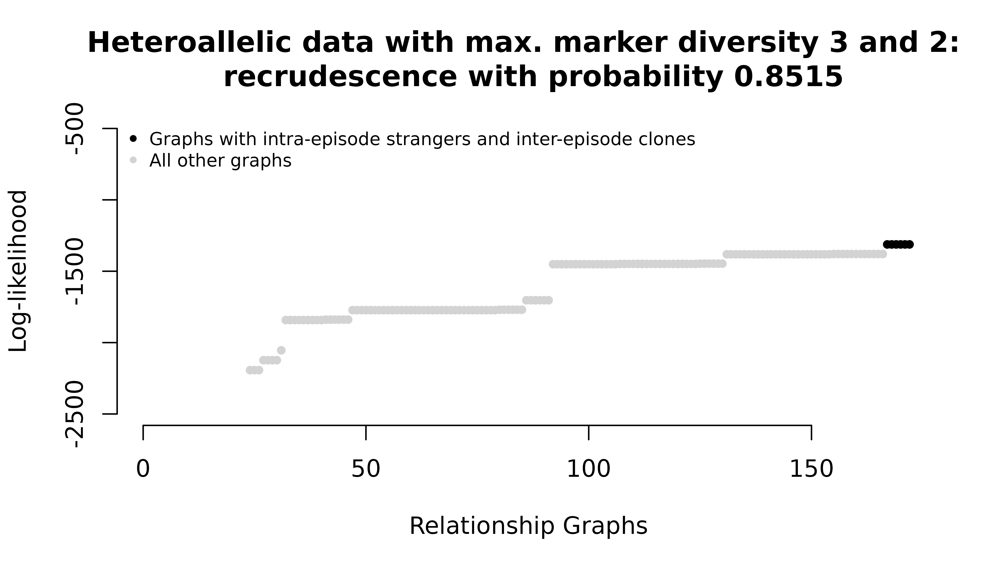
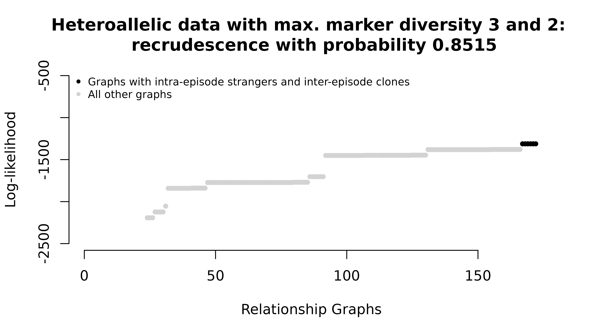
For the homoallelic data with elevated user-specified MOIs, all intra-episode parasites in maximum likelihood graphs are siblings. For the heteroallelic data, all intra-episode parasites in maximum likelihood graphs are strangers. Both have the same maximum probabilities of recrudescence.
One upshot of this is that maximum probabilities could be increased by increasing counts of intra-episode siblings. Arguably, maximum probabilities should not increase with more than two intra-episode siblings because siblings are not independent. In practice, when MOIs under the Pv3Rs model are based on realistic MOI estimates, groups of three or more siblings are modelled as groups of two; see vignette(“intra-episode-siblings”).
END OF DIGRESSION
Increasing episode counts
Recurrences can be added without adding data
ys_match <- list("1_recurrence" = list(enrol = all_As,
recur1 = all_As),
"2_recurrence" = list(enrol = all_As,
recur1 = all_As,
recur2 = no_data),
"3_recurrence" = list(enrol = all_As,
recur1 = all_As,
recur2 = no_data,
recur3 = no_data))
ys_mismatch <- list("1_recurrence" = list(enrol = all_As,
recur1 = all_Bs),
"2_recurrence" = list(enrol = all_As,
recur1 = all_Bs,
recur2 = no_data),
"3_recurrence" = list(enrol = all_As,
recur1 = all_Bs,
recur2 = no_data,
recur3 = no_data))The marginal probability that the first recurrence is a recrudescence / reinfection depends on the total number of recurrences:
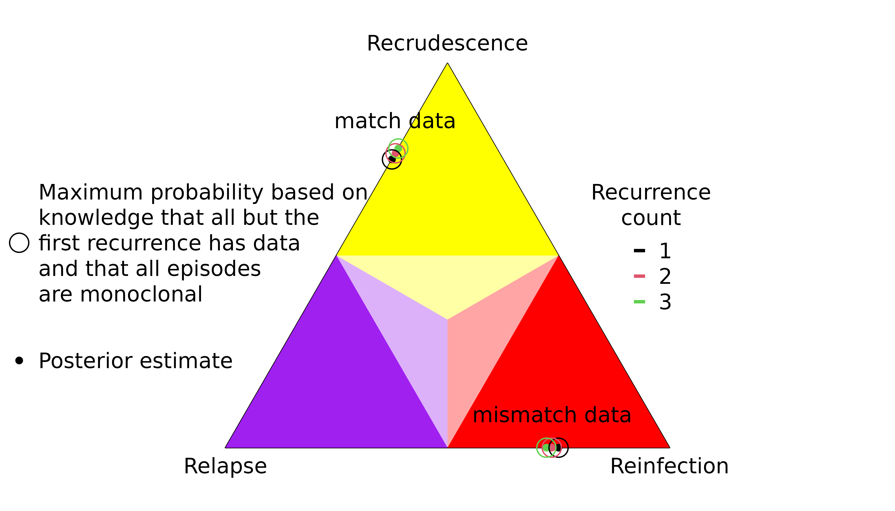
An example of how recrudescence probabilities converge to their maxima over 1, 2, 5 and 100 markers:
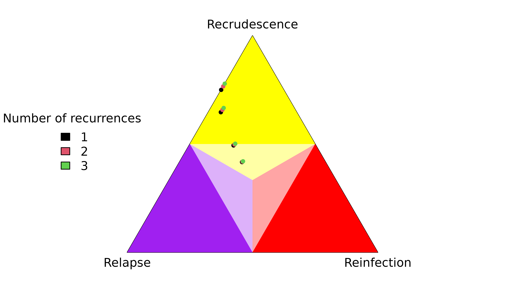
Note that the above maxima are not bounds imposed by the prior: they are based on knowledge that there are no recurrent data on all but the first recurrence; see vignette(“graph-prior”).
Position in a sequence
Because the distribution over relationship graphs is not invariant to different orderings of states in a sequence (more graphs are compatible with a reinfection at the beginning versus the end of a sequence of three episodes, for example), the position of a recurrence in a sequence has a bearing on posterior estimates.
This effect is negligible when all episodes have the same data on many markers:
y <- list(enrol = all_As,
recur1 = all_As,
recur2 = all_As,
recur3 = all_As)
suppressMessages(compute_posterior(y, fs))$marg
#> C L I
#> recur1 0.7720588 0.2279412 5.585675e-23
#> recur2 0.7720588 0.2279412 5.316220e-23
#> recur3 0.7720588 0.2279412 5.044004e-23Instead, consider sequences of episodes with observations (Os) and episodes with no data (Ns):
ys_match <- list("NOO" = list(enrol = no_data,
recur1 = all_As,
recur2 = all_As),
"ONO" = list(enrol = all_As,
recur1 = no_data,
recur2 = all_As),
"OON" = list(enrol = all_As,
recur1 = all_As,
recur2 = no_data))
ys_mismatch <- list("NOO" = list(enrol = no_data,
recur1 = all_As,
recur2 = all_Bs),
"ONO" = list(enrol = all_As,
recur1 = no_data,
recur2 = all_Bs),
"OON" = list(enrol = all_As,
recur1 = all_Bs,
recur2 = no_data))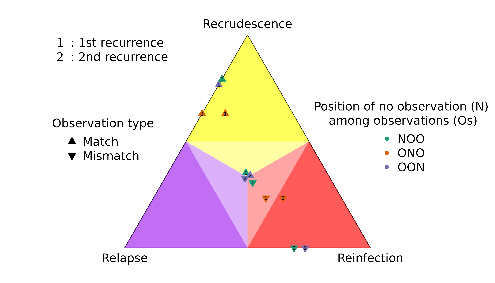
Highly informed recurrences
The first recurrence in the sequence OON (upward purple 1 triangle) has a slightly lower probability of recrudescence than second recurrence in the sequence NOO (upward green 2 triangle) despite both recurrences having the same rare observations that match the directly preceding episode.
The first recurrence in the sequence OON (downward purple 1 triangle) has a slightly higher probability of reinfection than the second recurrence in the sequence NOO (downward green 2 triangle) despite both recurrences having the same observations that mismatch the directly preceding episode.
Weakly and uninformed recurrences
Unsurprisingly, the posterior of the first recurrence in the sequence NOO is close to the prior (it has no preceding data), likewise for the second recurrence in the sequence of OON (it has no data). More surprisingly, the posterior of the first recurrence of the sequence ONO is not close to the prior, despite having no data. On closer inspection, this is not so surprising for reasons explained below.
For match data (upward triangles), strong evidence for a clonal edge between episodes one and three in ONO is incompatible with all recurrence sequences ending with reinfection and reinfection followed by recrudescence, informing strongly the second recurrence and weakly the first recurrence. By comparison, strong evidence for a clonal edge between episodes two and three in NOO is incompatible with all sequences of recurrences ending with reinfection, informing the second recurrence only; likewise, strong evidence for a clonal edge between episodes one and two in OON is incompatible with all sequences of recurrences starting with reinfection, informing the first recurrence only.
epsilon <- .Machine$double.eps # Very small probability
names(which(suppressMessages(compute_posterior(y = ys_match[["ONO"]], fs))$joint < epsilon))
#> [1] "IC" "CI" "LI" "II"
names(which(suppressMessages(compute_posterior(y = ys_match[["NOO"]], fs))$joint < epsilon))
#> [1] "CI" "LI" "II"
names(which(suppressMessages(compute_posterior(y = ys_match[["OON"]], fs))$joint < epsilon))
#> [1] "IC" "IL" "II"On close inspection the upward orange 1 triangle makes intuitive sense: if you know a first recurrence is followed by a second MOI = 1 recurrence that is a clone of the MOI = 1 enrolment episode, it is very unlikely the second recurrence is a clone drawn from a new mosquito as it would be if it were a recrudescence of a reinfection. As such, the data on the enrolment episode and the second recurrence tell us something about the first recurrence, and thus the posterior estimate of the first recurrence deviates from the prior even though the first recurrence has no data.
The explanation for mismatch data (downward triangles) in the sequence ONO is similar to that for match data: strong evidence for a stranger edge between episodes one and three is incompatible with a double recrudescence, so the posterior of the first recurrence (downward orange 1 triangle) deviates from the prior despite the first recurrence having no data.
epsilon <- .Machine$double.eps # Very small probability
names(which(suppressMessages(compute_posterior(y = ys_mismatch[["ONO"]], fs))$joint < epsilon))
#> [1] "CC"
names(which(suppressMessages(compute_posterior(y = ys_mismatch[["NOO"]], fs))$joint < epsilon))
#> [1] "CC" "LC" "IC"
names(which(suppressMessages(compute_posterior(y = ys_mismatch[["OON"]], fs))$joint < epsilon))
#> [1] "CC" "CL" "CI"Interpreting uncertainty
Uncertain posterior estimates can be uncertain for two reasons that are not mutually exclusive:
- more data are needed
- the states are not fully identifiable
It is also important to bear in mind the fact that, under the Pv3Rs model, trial participants with different epside counts and per-episode MOIs have different maximum probabilities of recrudescence / reinfection. For example, if we use a common threshold of 0.8 to classify probable reinfection assuming recurrence states are equally likely a priori, we can discount a priori all trail participants with a single monoclonal recurrence following a monoclonal enrolment episode because their posterior reinfection probabilities will never exceed 0.75, even if their data are highly informative of reinfection:
y <- list(enrol = all_As, recur = all_Bs)
fs <- sapply(ms, FUN = function(m) c("A" = 0.5, "B" = 0.5), simplify = FALSE)
# Using the default uniform prior on recurrent states
suppressMessages(compute_posterior(y, fs))$marg
#> C L I
#> recur 0 0.25 0.75
# Using a non-uniform prior on recurrent states
prior <- as.matrix(data.frame("C" = 0.25, "L" = 0.25, "I" = 0.5))
suppressMessages(compute_posterior(y, fs, prior))$marg
#> C L I
#> recur 0 0.1428571 0.8571429And that, for a given trial participant, the probability of recrudescence / reinfection depends on its position within a sequence, especially if one or more episodes has no data.
Meiotic siblings
Methods
We simulated data and generated results for an initial infection containing two or three meiotic siblings and a recurrent
- stranger
- clone
- regular sibling
- meiotic sibling
Posterior probabilities are computed assuming recurrent states are equally likely a priori.
Results
When the initial infection contains two meiotic siblings
compute_posterior is well behaved with maximum likelihood
on the true relationship graph (not shown). Posterior probabilities
converge to
- probable reinfection when the recurrent parasite is a stranger,
- probable recrudescence when the recurrent parasite is a clone,
- certain relapse when the recurrent parasite is a regular sibling,
- certain relapse when the recurrent parasite is a meiotic sibling.
 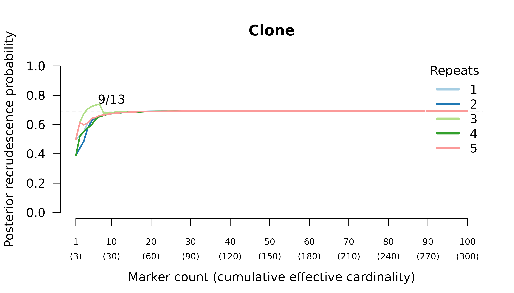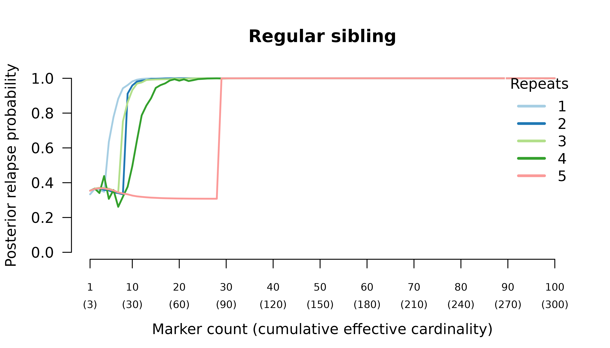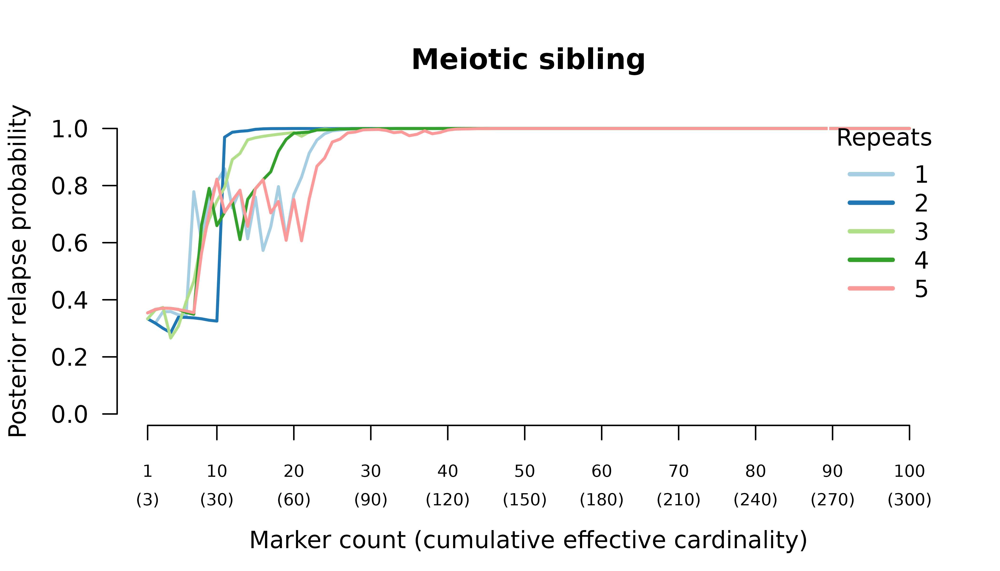
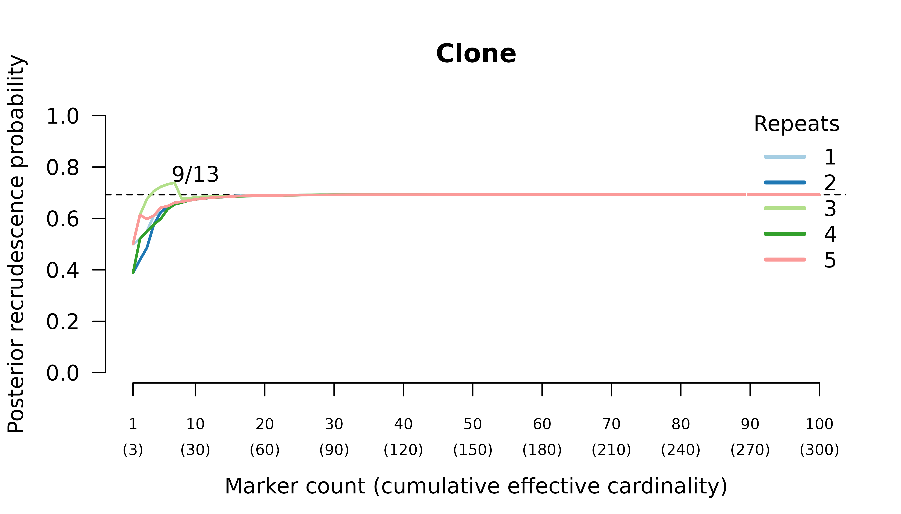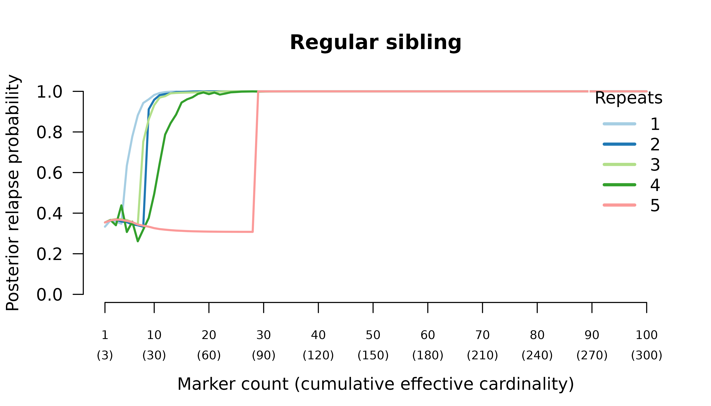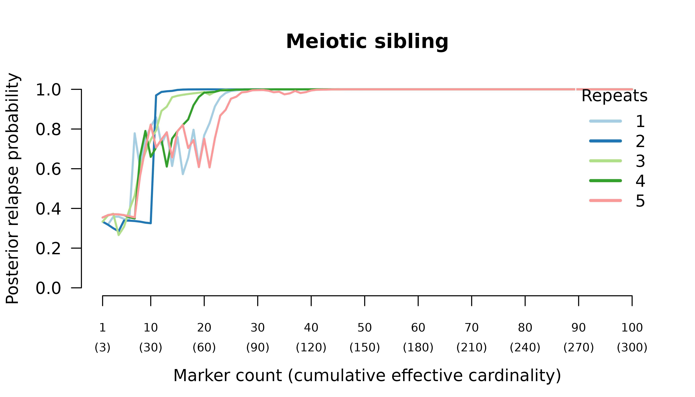
When the initial infection contains three meiotic siblings and the recurrent parasite is either a stranger or a clone, posterior probabilities converge correctly to probable reinfection and probable recrudescence, respectively, but with maximal values given by graphs over relationships between two, not three, parasites in the initial infection.
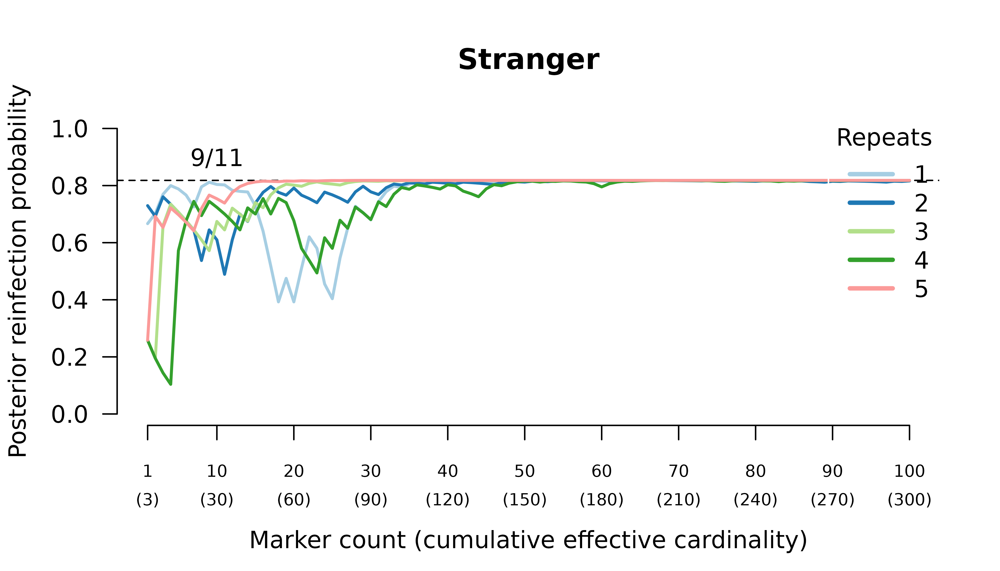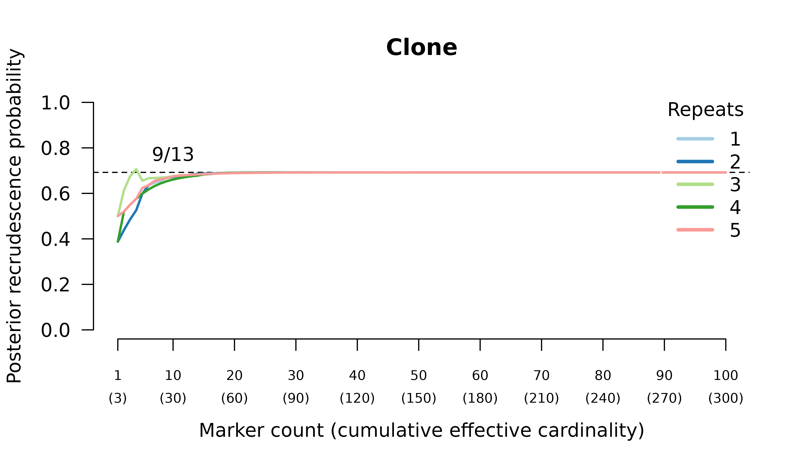
Relationship graphs (not shown) are wrong for two reasons:
- all the relationship graphs have two, not three, parasites in the initial infection because there are at most two alleles per marker. Although technically incorrect, this behaviour is arguably desirable (see digression above).
- the highest likelihood relationship graphs have stranger parasites in the initial episode because prevalence data from three or four meiotic siblings are identical to bulk data from the parents who are strangers.
We can force the graphs to have three distinct parasites in the initial episode by specifying external MOIs. Doing so recovers maximum likelihood on true relationship graphs. However, the correct MOIs are unknowable in practice: a collection of siblings from two parents can only ever be as diverse as the two parents.
When the initial infection contains three meiotic siblings and the recurrent parasite is a regular or meiotic sibling, posterior probabilities converge to probable recrudescence with maximum likelihood on graphs with a clonal edge to the sibling relapse, and either two stranger parasites in the initial episode when no external MOIs are specified, or three sibling parasites in the initial episode when the correct MOIs (unknowable in practice) are provided externally.
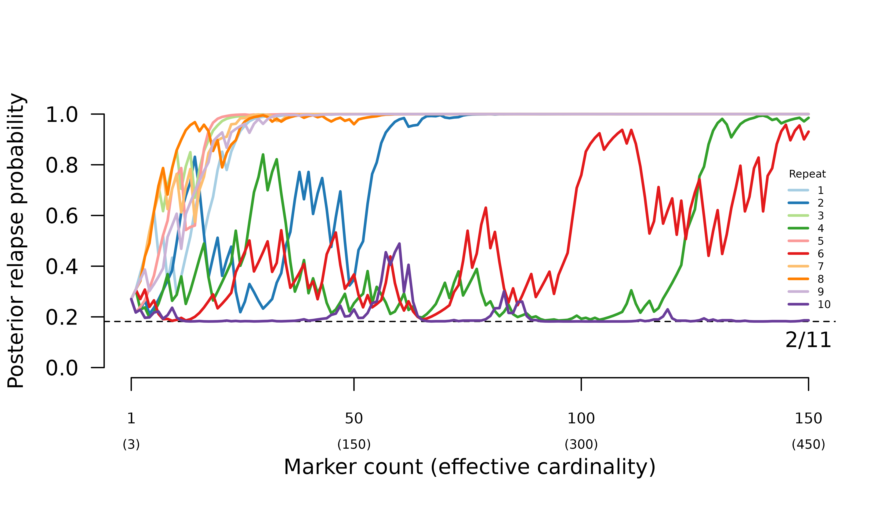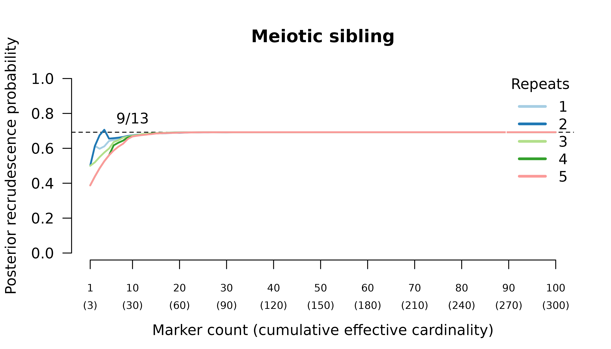
Half siblings
Methods
We simulated data for three half siblings: two in an initial episode, the third in a recurrence:
- child of parents 1 and 2 in the initial episode
- child of parents 1 and 3 in the initial episode
- child of parents 2 and 3 in the recurrence
We explored two scenarios: one where all parental parasites draw from the same allele distribution. Another with admixture where parent 1 draws alleles disproportionally to parents 2 and 3. The admixture scenario is improbable. We explore it because it is a worse case scenario: it is contrived to maximally hamper relapse classification.
Results
In general, when parental parasites draw from the same allele distribution, the frequency of certain relapse increases erratically with the number of markers genotyped.
For this particular case where there are three equifrequent alleles per marker, we can show theoretically that the system behaves erratically because a small perturbation to the ratio of observations (all alleles match across the three half siblings, all alleles are different, intra-episode alleles match, inter-episode alleles match) can lead to a large deviation in the odds of relapse versus reinfection; see vignette(“half-siblings”). The purple, red, and green trajectories below have higher than the expected 0.5 intra-to-inter match ratios; moreover, the purple trajectory’s intra-to-inter match ratio consistently exceeds , a condition found theoretically to concentrate posterior probability on reinfection under certain conditions; again, see vignette(“half-siblings”).
 When intra-episode parasites systematically share rare alleles
(admixture AND imbalanced allele frequencies), the frequency of probable
reinfection increases erratically with the number of markers
genotyped.
When intra-episode parasites systematically share rare alleles
(admixture AND imbalanced allele frequencies), the frequency of probable
reinfection increases erratically with the number of markers
genotyped.
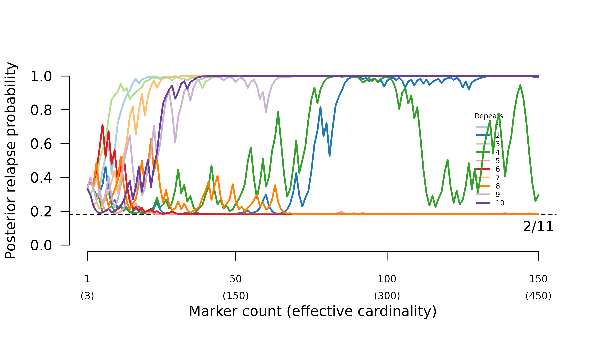 In both scenarios, the likelihood of the true graph with siblings within and across episodes is quashed as soon as distinct alleles from all three parents are observed at a given marker. In general,
- when all parasites draw from the same allele distribution, the maximum likelihood graphs are the two with one inter-episode sibling edge.
- when intra-episode parasites systematically share rare alleles, the maximum likelihood graph is the one with one intra-episode sibling edge.
Parent-child like siblings
Methods
We simulated data for three parent-child like siblings:
- child of selfed parent 1 in the initial episode
- child of parents 1 and 2 in the initial episode
- child of selfed parent 2 in the recurrence
Aside: the alternative with both children of selfed parents in the initial episode is equivalent to the meiotic case above with three mieotic siblings in the initial episode because prevalence data from three meiotic siblings is equivalent to prevalence data from two stranger parents and leads to probable recrudescence rather than certain relapse with the number of markers genotyped.
As for half-siblings, we explored two scenarios: one where all parental parasites draw from the same allele distribution. Another with admixture where parent 1 draws alleles disproportionally to parents 2 and 3. The admixture scenario is improbable. We explore it because it is a worse case scenario: it is contrived to maximally hamper relapse classification.
Results
When parental parasites draw from the same allele distribution, the frequency of certain relapse increases erratically with the number of markers genotyped.
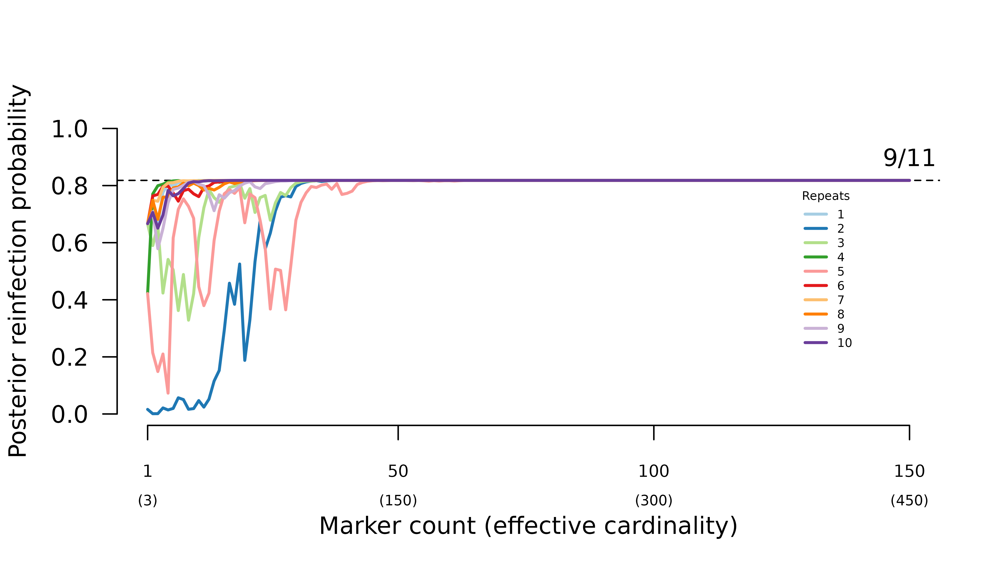
When intra-episode parasites systematically share rare alleles (admixture AND imbalanced allele frequencies), the frequency of probable reinfection increases erratically with the number of markers genotyped.

In general, when all parasites draw from the same allele distribution, the maximum likelihood graph is the true graph with siblings within and across episodes. Meanwhile, when intra-episode parasites systematically share rare alleles, the maximum likelihood graph is the one with one intra-episode sibling edge.